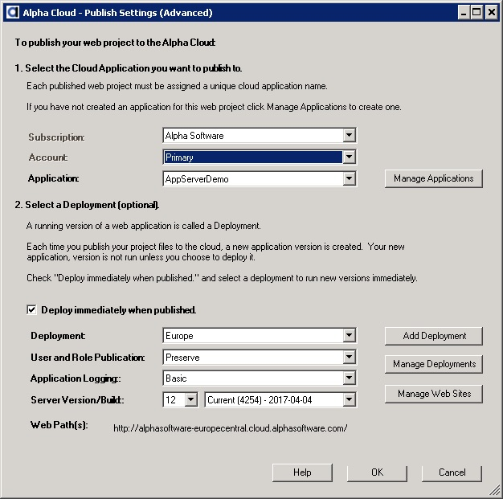

Alpha Cloud - Alpha Anywhere Developer's Guide
You can also manage your cloud publish profile and publish to Alpha Cloud from the common dialogs used for publishing from Alpha Anywhere.
Creating a Cloud Publish Profile
Publish Your Web Project
- Begin by clicking on the web control panel toolbar icon labeled "Publish" to open the "Publish Web Project" dialog.
- Click the Add/Edit Profile icon by the profile names to display a the current profiles.
- Click the button entitled "Add New Profile" to create a new profile.
- Click the Alpha Cloud radio button, then click the button labeled "Finish".
Depending on how many Alpha Cloud subscriptions and accounts you are authorized to manage, and the preferences you have set, a different dialog will be displayed.
If you have a single subscription and account, the basic publish dialog below will be displayed.
Complete the entries in the dialog as described previously in Basic Publish Settings.
After completing the initial publish settings and clicking OK, you will be prompted to name your new profile.

If you have permission to manage multiple subscriptions and accounts, follow the instructions in Advanced Publishing Support in Alpha Anywhere.
After completing the initial publish settings and clicking OK, you will be prompted to name your new profile.

- Give your new profile a name and click the OK button.
- To return to the settings dialog later, select your new profile on the Web Project Profiles dialog, and click the button to the right of the entry labeled "Publish settings" under the property group "Publish to Alpha Cloud".
Once you have created your publish profile, you can use that profile again and again to publish new versions of your web project.
- Begin by clicking on the web control panel toolbar icon labeled "Publish" to open the "Publish Web Project" dialog.
- At the Alpha Anywhere Publish Web Project dialog, select your Alpha Cloud publish profile, make any changes to settings and click the "Publish" button.
Alpha Anywhere will gather up the components required and display the Files to be Published dialog (Note: You can check "Don't show this list again" to skip this step in the future).
click the OK button to proceed with publishing your web project to the cloud.
- The Alpha Cloud Publish Progress dialog will be displayed while your web project is being published and deployed on the Alpha Cloud.
When the dialog completes, a message box will be displayed.
Click the OK button on the message box.
Click the Close button on the Alpha Cloud Progress Dialog to return to the Alpha Anywhere dialog Publish Dialog.